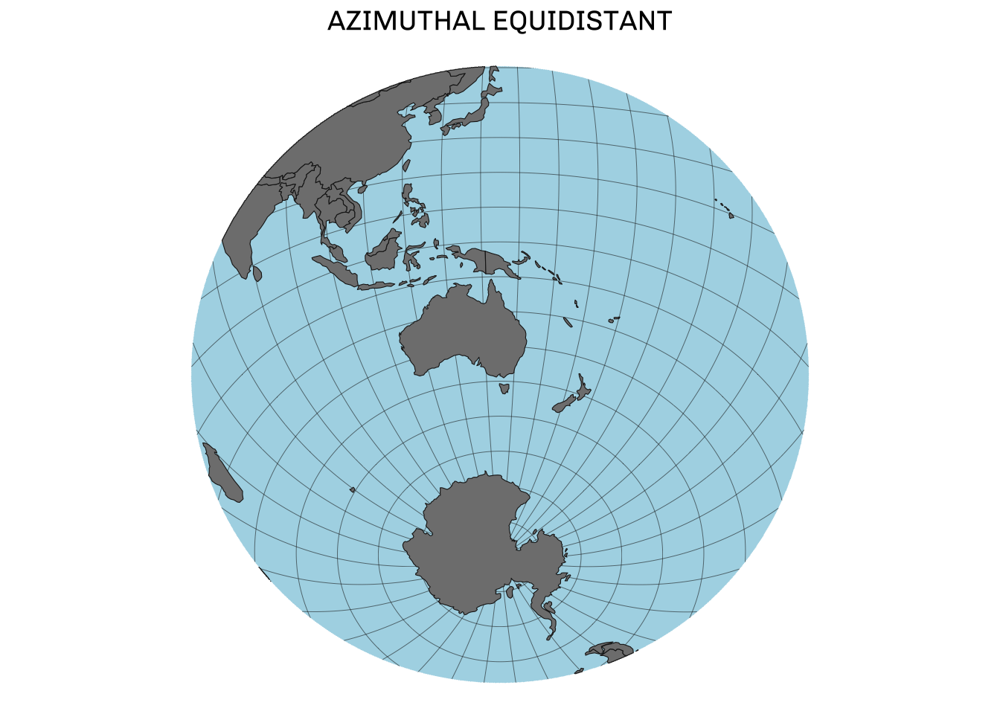

countries <- s2_data_countries() ## Read in a polygon of all countriesIntroduction: You’re just projecting
One of the first things you learn when reading (or making) a map is the complexity of projection. Any map is a 2D representation of a 3D object (i.e. the ellipsoid of the Earth). This means that we inevitably end up losing information in our endeavour to map the world.
Discussions of map projections often focus on different projections designed for world maps, those which can represent the whole planet (for better or worse) in a single space. However, in some cases we have no interest in representing the whole world and may instead want to create a map focussed on a particular region or location. Azimuthal projections are a useful projection type for these use cases.
The theory: What the heck is an azimuth?
An azimuth (from the Arabic السموت) is an angle measured relative to some cardinal direction (e.g. N). For example, the azimuth of true south relative to true north is 180°. An azimuthal projection takes a flat plane that is a tangent to the Earth’s surface with a single tangent point where the plane and Earth intersect. Points from the Earth are then projected onto this plane (see below).
All azimuthal projections are based around this central tangent point and all azimuths (i.e. directions) from this central point are preserved accurately in the projection. Different azimuthal projections experience different types of distortion, but in all cases the level of distortion is lowest at the central point and increases equally as you move further away from the central point in any direction.
By focussing on a central point, azimuthal projections can do a great job of representing a particular section of the Earth (e.g. one hemisphere). Once you move far enough away from the central point the map can become harder to read. In many Azimuthal projections, areas too far from the central point are not even visible.
The practice: How do I use an azimuthal projection?
For this task, we need polygons from the s2 package that work with spherical geometry. A discussion of spherical geometry is too much for this post. All we need to know is that these polygons can work in azimuthal projections with any central point (i.e. even polar regions).
Now that we have our polygons, we can project them into an azimuthal projection around a central point. To show the power of azimuthal projections, we’ll focus our maps in the Southern Hemisphere around Melbourne (lat: -37.8136, lon: 144.9631). This is a perspective of the globe (including Antarctica) that is less often represented.
As a first example of an azimuthal projection, let’s use Azimuthal Equal-Area. As the name suggests, this projection will be azimuthal (i.e. around a central point) and will accurately represent the area of shapes on the map.
Note
In ggplot2, it is possible to transform objects on the fly by specifying a CRS inside coord_sf(); however, I’ve found this process to be fragile. Projecting objects before plotting has been much more successful for me.
## Create a proj string to describe the projection
## The projection alias is 'laea'
## The variables lat_0 and lon_0 represent our central point
crs <- "+proj=laea +lat_0=-37.8136 +lon_0=144.9631"
## Project our objects to this new projection
## Convert them into sf objects for easily plotting in ggplot
countries_laea <- st_transform(st_as_sfc(countries),
crs)
## Create a plot
ggplot() +
geom_sf(data = countries_laea,
fill = "grey50", colour = "grey10") +
theme_void()The areas of our countries might be preserved, but the shape certainly is not. While we can technically include a country like Canada or the US, it is so far from Australia that the shape is completely distorted. Here we can see why azimuthal projections are less well suited for world maps. To make our plot neater, let’s clip our data to just show one hemisphere. I’ll also add in some neat graticules (i.e. lines of lat/lon) and ocean polygon to make the plot easier to read (in folded code).
## Clip around our central point
buffer <- s2_buffer_cells(
## Specify our central point
as_s2_geography("POINT(144.9631 -37.8136)"),
## 9800km is the radius of the buffer to show one whole hemisphere of the earth
distance = 9800000,
## How smooth is the buffer? Higher will be smoother (default: 1000)
max_cells = 5000
)
## Clip our country polygons using this buffer
countries_clip <- s2_intersection(buffer, countries)
## Reproject to laea
countries_clip_laea <- st_transform(st_as_sfc(countries_clip),
crs)Show the code
### OCEAN
## To create ocean polygon, determine the *inverse* of all countries
## Clip and transform ocean
globe <- s2::as_s2_geography(TRUE) ## The whole Earth
ocean <- s2_difference(globe, s2_union_agg(countries))
ocean_clip <- s2_intersection(buffer, ocean)
ocean_clip_laea <- st_transform(st_as_sfc(ocean_clip),
crs)
### GRATICULES
## Specify range of lines of longitudinal
## (i.e. lines running N-S)
meridian_long <- seq(-180, 175, 10)
## Create linestring for each line
long_lines <- lapply(X = meridian_long,
FUN = \(x){
sf::st_linestring(x = data.frame(V1 = x,
V2 = seq(-90, 90, 1)) |>
as.matrix())}) |>
sf::st_sfc(crs = "EPSG:4326")
## Do the same process for lines of latitude (i.e. E-W)
meridian_lat <- seq(-80, 80, 10)
lat_lines <- lapply(X = meridian_lat,
FUN = \(x){
sf::st_linestring(x = data.frame(V1 = seq(-180, 180, 1),
V2 = x) |>
as.matrix())}) |>
sf::st_sfc(crs = "EPSG:4326")
#Combine together into a single dataset
graticules <- c(lat_lines, long_lines)
#Clip and reproject these graticules
graticules_clip <- s2_intersection(buffer, graticules)
graticules_clip_laea <- st_transform(st_as_sfc(graticules_clip),
crs)ggplot() +
geom_sf(data = ocean_clip_laea,
fill = "lightblue", colour = NA) +
## Place graticules *over* the ocean
geom_sf(data = graticules_clip_laea,
colour = "grey10", linewidth = 0.1) +
geom_sf(data = countries_clip_laea,
fill = "grey50", colour = "grey10") +
labs(title = "AZIMUTHAL EQUAL-AREA") +
theme_void() +
theme(plot.title = element_text(family = "Chivo", hjust = 0.5, size = 14))The possibilites: What other azimuthal projections should I try?
Azimuthal Equidistant Projection
Unlike the equal area projection, Azimuthal Equidistant will maintain accurate distances across the map. This type of projection has a common use in flight path mapping as all flight paths can be easily compared.
Show the code
## Create a proj string to describe the projection
## The projection alias is 'ortho'
## The variables lat_0 and lon_0 represent our central point
crs_aeqd <- "+proj=aeqd +lat_0=-37.8136 +lon_0=144.9631"
countries_clip_aeqd <- st_transform(st_as_sfc(countries_clip),
crs_aeqd)
ocean_clip_aeqd <- st_transform(st_as_sfc(ocean_clip),
crs_aeqd)
graticules_clip_aeqd <- st_transform(st_as_sfc(graticules_clip),
crs_aeqd)
ggplot() +
geom_sf(data = ocean_clip_aeqd,
fill = "lightblue", colour = NA) +
## Place graticules *over* the ocean
geom_sf(data = graticules_clip_aeqd,
colour = "grey10", linewidth = 0.1) +
geom_sf(data = countries_clip_aeqd,
fill = "grey50", colour = "grey10") +
labs(title = "AZIMUTHAL EQUIDISTANT") +
theme_void() +
theme(plot.title = element_text(family = "Chivo", hjust = 0.5, size = 14))
Orthographic projection
One powerful azimuthal projection is Orthographic projection. Unlike many projections that seek to preserve some feature like area or shape, the orthographic projection maps one hemisphere with accurate perspective. In other words, it represents the Earth as it would look from space.
Show the code
## Create a proj string to describe the projection
## The projection alias is 'ortho'
## The variables lat_0 and lon_0 represent our central point
crs_ortho <- "+proj=ortho +lat_0=-37.8136 +lon_0=144.9631"
countries_clip_ortho <- st_transform(st_as_sfc(countries_clip),
crs_ortho)
ocean_clip_ortho <- st_transform(st_as_sfc(ocean_clip),
crs_ortho)
graticules_clip_ortho <- st_transform(st_as_sfc(graticules_clip),
crs_ortho)
ggplot() +
geom_sf(data = ocean_clip_ortho,
fill = "lightblue", colour = NA) +
## Place graticules *over* the ocean
geom_sf(data = graticules_clip_ortho,
colour = "grey10", linewidth = 0.1) +
geom_sf(data = countries_clip_ortho,
fill = "grey50", colour = "grey10") +
labs(title = "ORTHOGRAPHIC") +
theme_void() +
theme(plot.title = element_text(family = "Chivo", hjust = 0.5, size = 14))#|echo: false
ggplot() +
geom_sf(data = ocean_clip_ortho,
fill = "lightblue", colour = NA) +
## Place graticules *over* the ocean
geom_sf(data = graticules_clip_ortho,
colour = "grey10", linewidth = 0.1) +
geom_sf(data = countries_clip_ortho,
fill = "grey50", colour = "grey10") +
theme_void()ggsave("./feature.png", dpi = 600, width = 7, height = 7)Near-side general perspective (or Vertical perspective)
The orthographic projection represent a view of Earth from an infinitely large distance above the surface. With the near-side general perspective projection, we can create a view of the Earth from a specific height above the surface. This is particularly handy to represent how the Earth is viewed by different satellites.
Below, we create two different maps that simulate the view from the International Space Station (~400km altitude) and the European Galileo satellite (~23,000km altitude).
Show the code
## Create a function that will create plot for any given height
nsper_plot <- function(h, lat_0, lon_0, countries, ocean, graticules){
## Create a proj string to describe the projection
## The projection alias is 'nsper'
## The variables lat_0 and lon_0 represent our central point
x <- s2::s2_earth_radius_meters() ## Radius of the Earth
q <- sqrt(x^2 - ((x^2)/(x + h))^2) ## Radius of the segment of the Earth viewed from height h
## Proj string for nsper at height h and lat/lon centre point
crs_nsper <- paste0("+proj=nsper +h=", h, " +lat_0=", lat_0, " +lon_0=", lon_0)
## We need to create a new buffer
buffer2 <- s2_buffer_cells(
## Specify our central point
as_s2_geography(paste0("POINT(", lon_0, " ", lat_0, ")")),
distance = q,
max_cells = 5000 ## Specify how smooth the buffer will be (default 1000)
)
countries_clip_nsper_meo <- st_transform(st_as_sfc(s2_intersection(buffer2, countries)),
crs_nsper)
ocean_clip_nsper_meo <- st_transform(st_as_sfc(s2_intersection(buffer2, ocean)),
crs_nsper)
graticules_clip_nsper_meo <- st_transform(st_as_sfc(s2_intersection(buffer2, graticules)),
crs_nsper)
ggplot() +
geom_sf(data = ocean_clip_nsper_meo,
fill = "lightblue", colour = NA) +
## Place graticules *over* the ocean
geom_sf(data = graticules_clip_nsper_meo,
colour = "grey10", linewidth = 0.1) +
geom_sf(data = countries_clip_nsper_meo,
fill = "grey50", colour = "grey10") +
theme_void()
}
ISS_plot <- nsper_plot(h = 400000, lat_0 = -37.8136, lon_0 = 144.9631, countries, ocean, graticules) +
labs(title = "NEAR-SIDE GENERAL PERSPECTIVE",
subtitle = "International Space Station\n(Near-Earth orbit)") +
theme(plot.title = element_text(family = "Chivo", hjust = 0.5, size = 14),
plot.subtitle = element_text(family = "Chivo", hjust = 0.5, size = 7))
Galileo_plot <- nsper_plot(h = 2.3e+07, lat_0 = -37.8136, lon_0 = 144.9631, countries, ocean, graticules) +
labs(title = "NEAR-SIDE GENERAL PERSPECTIVE",
subtitle = "Galileo Satellite\n(Mid-Earth orbit)") +
theme(plot.title = element_text(family = "Chivo", hjust = 0.5, size = 14),
plot.subtitle = element_text(family = "Chivo", hjust = 0.5, size = 7))
ISS_plot + Galileo_plotGeneral perspective (or Tilted perspective)
We can expand on this projection still further and consider the angle (or tilt) of the view. The near-side general perspective assumes a view looking directly towards the centre of the Earth, but many views, such as those from the ISS, might be tilted.
Let’s imagine a similar view of Melbourne from the ISS but tilted at 10 degrees.
Show the code
## Create a function that will create plot for any given height
tpers_plot <- function(h, tilt, lat_0, lon_0, countries, ocean, graticules){
## Create a proj string to describe the projection
## The projection alias is 'nsper'
## The variables lat_0 and lon_0 represent our central point
x <- s2::s2_earth_radius_meters() ## Radius of the Earth
q <- sqrt(x^2 - ((x^2)/(x + h))^2) ## Radius of the segment of the Earth viewed from height h
## Proj string for nsper at height h and lat/lon centre point
crs_tpers <- paste0("+proj=tpers +h=", h, " +tilt=", tilt, " +lat_0=", lat_0, " +lon_0=", lon_0)
## We need to create a new buffer
buffer2 <- s2_buffer_cells(
## Specify our central point
as_s2_geography(paste0("POINT(", lon_0, " ", lat_0, ")")),
distance = q,
max_cells = 5000 ## Specify how smooth the buffer will be (default 1000)
)
countries_clip_nsper_meo <- st_transform(st_as_sfc(s2_intersection(buffer2, countries)),
crs_tpers)
ocean_clip_nsper_meo <- st_transform(st_as_sfc(s2_intersection(buffer2, ocean)),
crs_tpers)
graticules_clip_nsper_meo <- st_transform(st_as_sfc(s2_intersection(buffer2, graticules)),
crs_tpers)
ggplot() +
geom_sf(data = ocean_clip_nsper_meo,
fill = "lightblue", colour = NA) +
## Place graticules *over* the ocean
geom_sf(data = graticules_clip_nsper_meo,
colour = "grey10", linewidth = 0.1) +
geom_sf(data = countries_clip_nsper_meo,
fill = "grey50", colour = "grey10") +
theme_void()
}
ISS_plot_tilt10 <- tpers_plot(h = 400000, tilt = 10, lat_0 = -37.8136, lon_0 = 144.9631, countries, ocean, graticules) +
labs(title = "GENERAL (TILTED) PERSPECTIVE",
subtitle = "International Space Station\n(Near-Earth orbit)\n10 degree tilt") +
theme(plot.title = element_text(family = "Chivo", hjust = 0.5, size = 14),
plot.subtitle = element_text(family = "Chivo", hjust = 0.5, size = 7))
ISS_plot + ISS_plot_tilt10